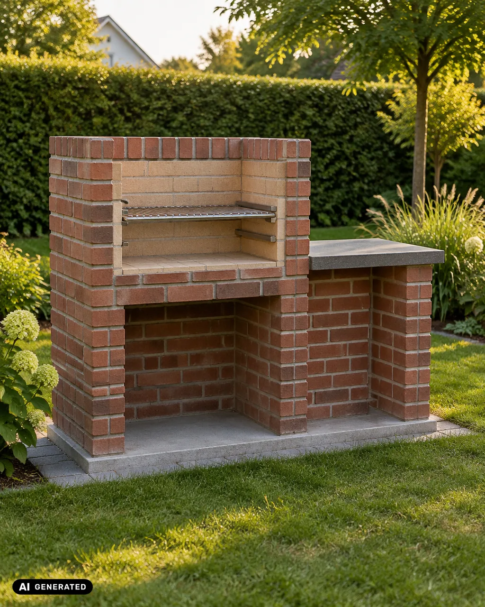
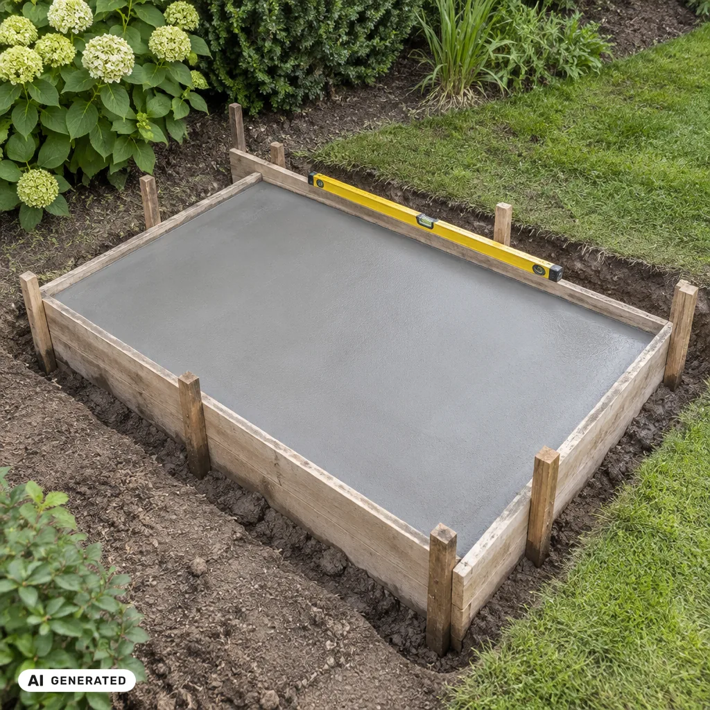
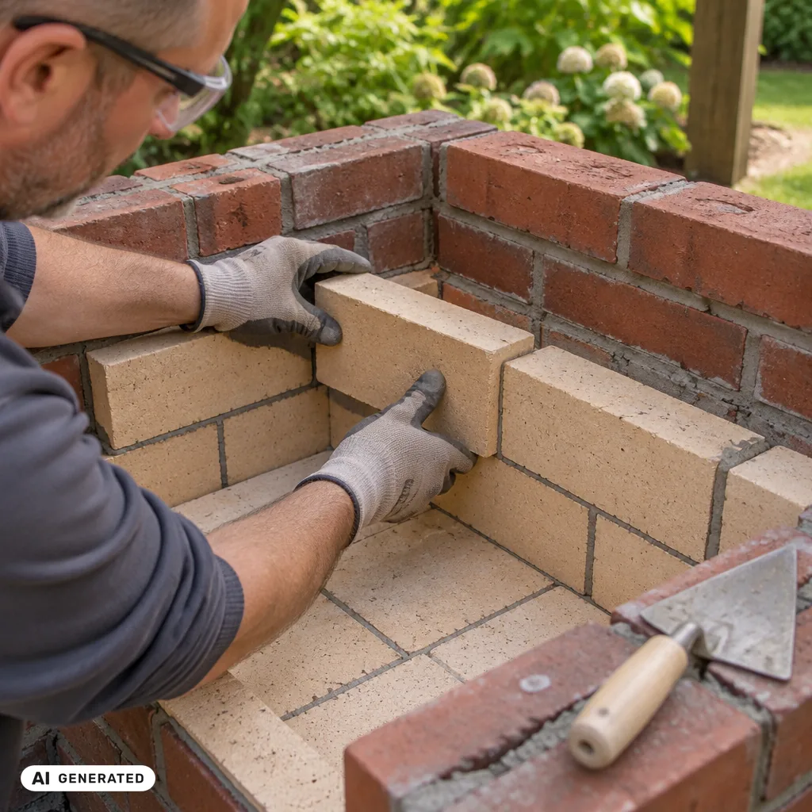
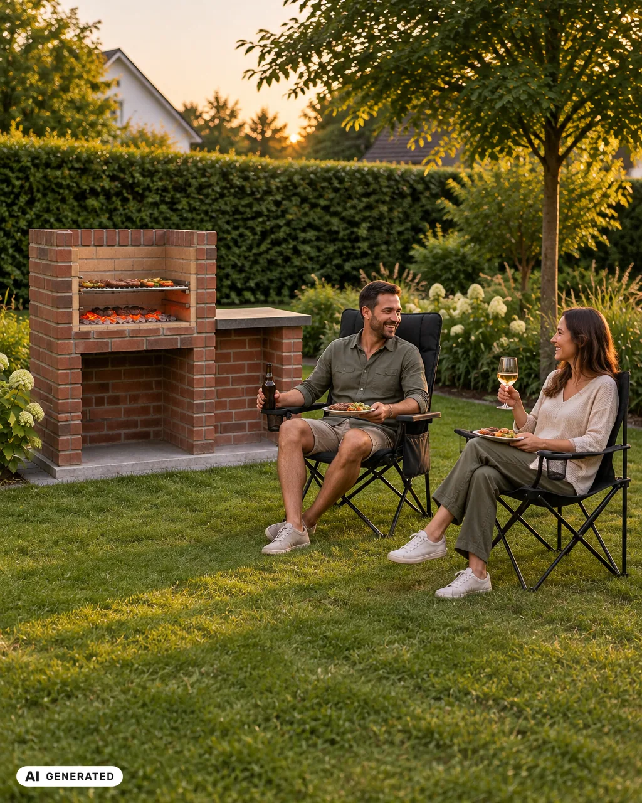

Eigene Grillstelle bauen – gemauert, Schritt für Schritt

Ein gemauerter Grill ist ein Projekt, das dich viele Sommer begleitet: ein fester Platz im Garten, an dem Freunde und Familie zusammenkommen. In diesem Ratgeber baust du eine gemauerte Grillstelle mit Feuerraum aus Schamottsteinen und einem Grillrost in zwei Höhen. Du brauchst etwas Erfahrung mit Mörtel und Wasserwaage. Plane zwei Wochenenden ein, dazwischen braucht das Fundament Zeit zum Aushärten.
Gemauerter Grill oder Feuerstelle im Garten?
Wer einen Grillplatz selber bauen möchte, hat meist zwei Möglichkeiten:
- Feuerstelle im Garten anlegen: eine offene Feuerstelle aus Steinen, oft mit Kiesbett drumherum. Schnell gebaut, gut fürs Lagerfeuer – zum Grillen aber niedrig und mit wenig Kontrolle über die Hitze.
- Grill mauern: eine feste Grillstelle mit Feuerraum und Rost in Arbeitshöhe. Mehr Aufwand, dafür grillst du im Stehen und kannst den Abstand zur Glut über die Rosthöhe einstellen.
In diesem Ratgeber geht es um die gemauerte Variante. Die Feuerstelle mit Kiesbett ist ein eigenes Projekt.
Das solltest du vorher wissen
- Regeln vor Ort: Ob und wo du eine feste Grillstelle bauen darfst, regeln Gemeinde, Landesbauordnung und Nachbarrecht. Frag vorab bei deiner Gemeinde nach. Wohnst du zur Miete, sprich vorher mit deiner Vermieterin oder deinem Vermieter.
- Platz und Abstand: Wähle einen Platz mit Abstand zu Haus, Gartenhaus, Holzzaun, Hecken und Bäumen. Achte darauf, wohin der Wind meist weht: Rauch soll weder in dein noch in Nachbars Fenster ziehen. Konkrete Mindestabstände legen die Vorschriften vor Ort fest.
- Untergrund: Die Grillstelle wiegt mehrere hundert Kilo. Sie braucht ein festes Fundament auf tragfähigem, ebenem Boden. Rasen oder lockere Erde allein reichen nicht.
- Hitze: Normale Mauersteine und normaler Mörtel sind nicht für direkte Glut gemacht. Den Feuerraum mauerst du deshalb mit Schamottsteinen und Schamottmörtel.
- Sicherheit beim Bauen: Beim Schneiden von Steinen entsteht Staub, Zement reizt die Haut. Trag Schutzbrille, Arbeitshandschuhe, Staubmaske (FFP2) und beim Trennschleifer zusätzlich Gehörschutz.
Materialliste
Beispiel für eine Grillstelle mit ca. 120 × 60 cm Außenmaß und einem Fundament von ca. 140 × 80 cm. Den Steinbedarf für dein Steinformat lässt du dir am besten beim Baustoffhändler berechnen.
| Material | Menge (Beispiel) | Hinweis |
|---|---|---|
| Schotter (Körnung z. B. 0/32) | ca. 0,3 m³ | Unterbau, lagenweise verdichten |
| Trockenbeton / Fertigbeton | ca. 0,15 m³ | Fundamentplatte, Richtwert 12–15 cm stark |
| Baustahlmatte | 1 Stück, auf Maß | Bewehrung der Platte |
| Schalbretter + Pflöcke | für 4 Seiten | Schalung fürs Fundament |
| Mauersteine (Klinker oder Mauerziegel) | nach Steinformat | Außenmauer |
| Mauermörtel | nach Herstellerangabe | für die Außenmauer |
| Schamottsteine | nach Maß des Feuerraums | Boden und Wände des Feuerraums |
| Schamottmörtel (hitzebeständig) | nach Herstellerangabe | nur für die Schamottsteine |
| Auflagen für den Rost | 2 Paar | z. B. Edelstahl-Winkel, eingemauert in zwei Höhen |
| Grillrost | 1 Stück | passend zur Innenbreite |
| optional: Ablageplatte | 1 Stück | Naturstein oder Beton als Arbeitsfläche |
Werkzeugliste
- Spaten, Schaufel, Schubkarre
- Rüttelplatte oder Handstampfer
- Wasserwaage (lang und kurz), Richtschnur, Zollstock
- Mörtelkübel, Rührquirl mit Bohrmaschine
- Maurerkelle, Fugeisen, Gummihammer
- Trennschleifer mit Steintrennscheibe oder Steinknacker
- Schutzbrille, Arbeitshandschuhe, Staubmaske (FFP2), Gehörschutz
Grill mauern – Schritt für Schritt
- Planen und abstecken. Zeichne die Grillstelle auf: Außenmaß, Feuerraum, Höhe des Rosts. Als Richtwert liegt eine bequeme Rosthöhe bei etwa 80–90 cm – probier sie an deiner eigenen Körpergröße aus. Stecke das Fundament mit Pflöcken und Richtschnur ab, rundherum etwa 10 cm größer als die Grillstelle.
- Aushub und Unterbau. Hebe die Fläche aus und entferne Wurzeln und Grassoden. Fülle Schotter lagenweise ein und verdichte jede Lage. Richtwert für eine kleine Grillstelle: 20–30 cm Schotter. Bei weichem Boden oder in frostreichen Regionen kann mehr nötig sein – frag beim Baustoffhändler nach.
- Fundamentplatte gießen. Setze die Schalung, prüfe sie mit der Wasserwaage und lege die Baustahlmatte auf Abstandhalter, damit sie im Beton liegt und nicht auf dem Schotter. Gieße den Beton ein, verdichte ihn und ziehe die Oberfläche glatt ab. Halte den Beton in den ersten Tagen feucht. Als Richtwert kannst du nach etwa einer Woche darauf mauern – maßgeblich sind die Angaben auf dem Sack.

- Erste Steinreihe setzen. Zeichne den Grundriss auf die Platte. Setze die erste Reihe Mauersteine in ein Mörtelbett und richte jeden Stein mit Wasserwaage und Gummihammer aus. Die erste Reihe entscheidet, ob die ganze Mauer gerade wird – nimm dir hier Zeit.
- Außenmauer hochziehen. Mauere Reihe für Reihe im Versatz: Jede Fuge liegt mittig über einem Stein darunter. Prüfe nach jeder Reihe Lot und Waage. Überschüssigen Mörtel streichst du ab, bevor er anzieht, und arbeitest die Fugen mit dem Fugeisen nach.
- Feuerraum mit Schamott auskleiden. Lege den Boden des Feuerraums mit Schamottsteinen aus und mauere die Innenwände mit Schamottmörtel. Die Fugen bleiben dünn – so verträgt der Feuerraum die Hitze besser. Normale Steine und normalen Mörtel verwendest du im Feuerraum nicht.

- Auflagen für den Rost einmauern. Setze in zwei Höhen je ein Paar Auflagen ein, auf denen der Rost sicher aufliegt. So grillst du nah an der Glut oder mit mehr Abstand. Prüfe, dass der Rost auf beiden Seiten fest aufliegt und nicht kippen kann.
- Abschluss und Ablage. Schließe die Mauer oben mit einer sauberen Steinreihe oder einer Abdeckplatte ab. Möchtest du eine Ablage für Teller und Grillzange, setze sie seitlich neben den Feuerraum – nicht darüber.
- Aushärten lassen. Lass Mörtel und Schamott vollständig trocknen, bevor du Feuer machst. Als Richtwert plane etwa zwei Wochen ein – maßgeblich sind die Angaben auf den Produkten. Feuchtigkeit im Mauerwerk kann bei zu früher Hitze zu Rissen führen.
- Erstes Feuer: klein anfangen. Mach beim ersten Mal nur ein kleines Feuer und steigere die Hitze langsam. So trocknet die Restfeuchte schonend aus. Erst danach grillst du mit voller Glut.
Praxistipp von Nelia: „Leg die erste Steinreihe einmal trocken – ohne Mörtel. So siehst du sofort, ob dein Maß zum Steinformat passt und wie viele Steine du schneiden musst. Das spart später viel Ärger.“
Sicherheit beim Grillen
- Halte Löschmittel griffbereit: Feuerlöscher oder Löschdecke, dazu einen Eimer Sand oder Wasser.
- Zum Anzünden nur Anzünder, die dafür gemacht sind – nie Spiritus oder Benzin.
- Lass Glut und Feuer nie unbeaufsichtigt. Kinder und Haustiere bleiben auf Abstand.
- Asche erst entsorgen, wenn sie vollständig kalt ist – am besten in einem Metalleimer.
- Bei Trockenheit und Wind: Prüfe, ob es örtliche Grill- oder Feuerverbote gibt.
Häufige Fehler
- Kein festes Fundament: Die Grillstelle sackt ab oder bekommt Risse.
- Normale Steine im Feuerraum: Sie können bei Glut springen – innen nur Schamott.
- Zu früh Feuer machen: Restfeuchte im Mauerwerk führt zu Rissen.
- Rost nur in einer Höhe: Du kannst die Hitze schlechter steuern.
- Platz ohne Blick auf den Wind: Der Rauch zieht genau dorthin, wo ihr sitzt – oder zu den Nachbarn.
Häufige Fragen
Welche Steine brauche ich für einen gemauerten Grill?
Außen Klinker oder Mauerziegel mit Mauermörtel, im Feuerraum Schamottsteine mit hitzebeständigem Schamottmörtel.
Brauche ich eine Genehmigung für eine Grillstelle?
Das hängt von deiner Gemeinde und vom Bundesland ab. Frag vor dem Bau bei der Gemeinde nach, auch zu Abständen zum Nachbargrundstück.
Wie lange dauert es, eine Grillstelle zu bauen?
Rechne mit etwa zwei Wochenenden Arbeit. Dazu kommen die Trockenzeiten von Beton und Mörtel – bis zum ersten Feuer vergehen also einige Wochen.
Wie hoch sollte der Grillrost sein?
Als Richtwert etwa 80–90 cm, ungefähr in Höhe einer Küchenarbeitsplatte. Mit zwei Auflagenhöhen kannst du den Abstand zur Glut wählen.
Kann ich statt eines gemauerten Grills eine Feuerstelle im Garten anlegen?
Ja – eine offene Feuerstelle aus Steinen mit Kiesbett ist schneller gebaut, eignet sich aber eher fürs Lagerfeuer als zum Grillen in Arbeitshöhe.
Passt zu deinem Projekt

Wenn die Grillstelle steht, brauchst du Platz zum Sitzen. Stell Stühle, Tisch und Decke mit Abstand zum Feuer auf: Die Bezüge sind aus Polyester-Gewebe und gehören nicht in die Nähe von Glut und Funkenflug.
- Campingstuhl Kompakt – Sitzhöhe 40 cm, 3 kg inkl. Tasche, Packmaß 88 × 18 × 18 cm. Schnell aufgeklappt, wenn spontan Gäste kommen.
- Campingstuhl Komfort – gepolstert, Sitzhöhe 50 cm, Lehne 3-fach verstellbar. Für lange Abende am Grill.
- Campingtisch Klein · Campingtisch Groß · Kühltasche · Picknickdecke · Gartenhandschuhe – folgt
Dein Grillplatz wartet
Eine gemauerte Grillstelle ist kein Projekt für einen Nachmittag. Aber Schritt für Schritt kommst du gut voran, und am Ende steht ein Platz, den du selbst gebaut hast. Nimm dir Zeit für Fundament und erste Steinreihe – der Rest folgt fast von selbst. Wir freuen uns, wenn du uns zeigst, was du draußen gemacht hast.